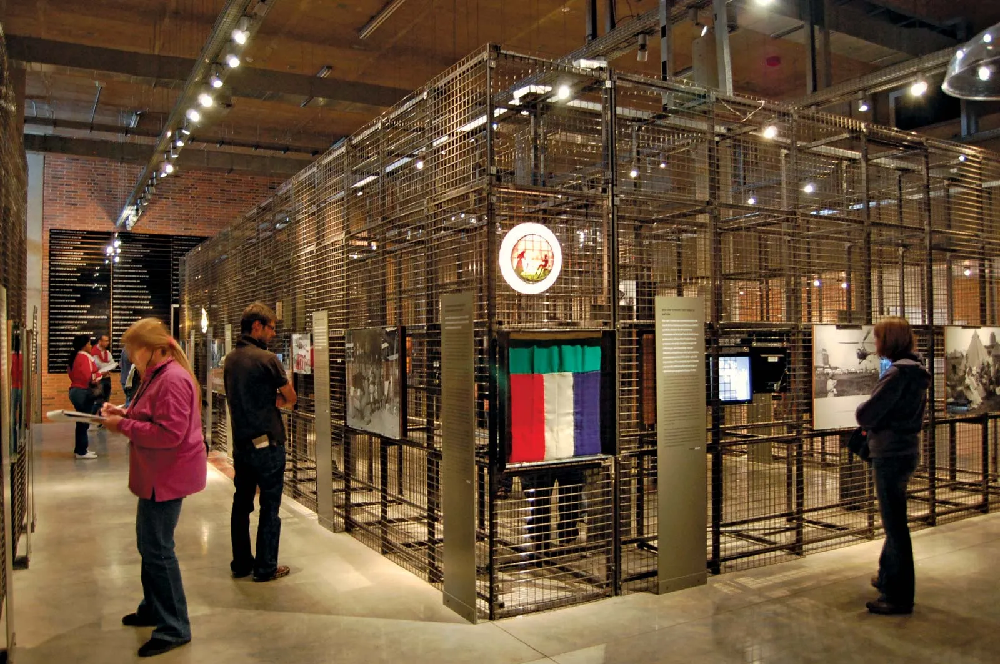

Apartheid History & Museums
South Africa’s history is deeply shaped by apartheid, and visiting museums provides a powerful insight into this period. The Apartheid Museum in Johannesburg offers an immersive experience of the country’s struggles and triumphs during the 20th century.
Other significant sites include Robben Island, where Nelson Mandela was imprisoned, and Constitutional Hill, a historical fortress that now houses South Africa’s highest court. These locations highlight resilience, freedom, and the journey toward democracy.